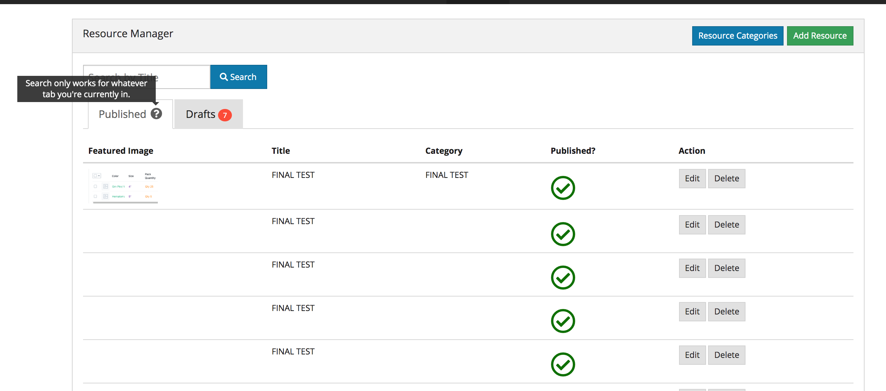
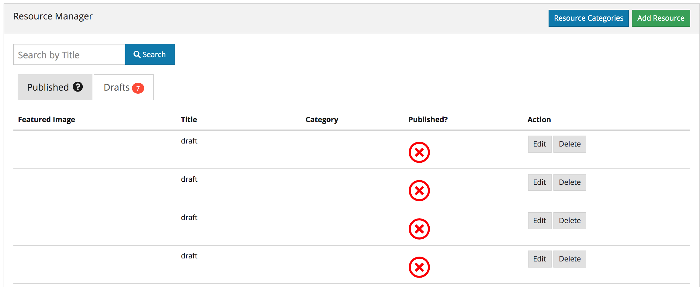
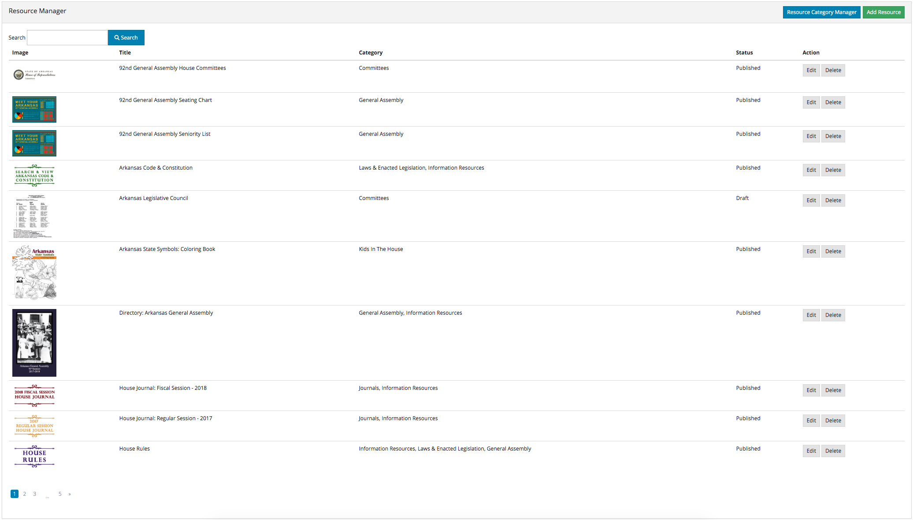
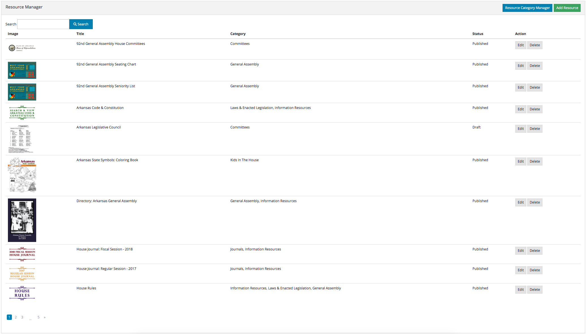

Dynamo Methods¶
This section will list all available methods that you are able to chain onto your Dynamo object that you create inside your Dynamo Controller. For a very simple admin, you might be able to get away with only using that auto() method which is auto-generated for you, and literally have no work to do. But in the case of a database relationship, or the case of renaming a field in the form, or sizing a picture a specific way, etc, you need to use the methods below.
addActionButton addField addFilter addHandler addIndex addIndexButton auto checkbox clearIndexes file formTab group hasMany hasManySimple hideAdd hideDelete indexOrderBy indexTab paginate password removeBoth removeField removeIndex searchable searchOption select text textarea
Note
NOTE: In the examples below, click the pictures to get a description and better view of them!
addActionButton()
The addField method allows you to create a button along-side the other default action butons, Edit and Delete. Keep in mind these default buttons can be
remove by calling hideDelete() or removeBoth().

addField()
The addField method is a bit tricky. You will never actually call this method directly. However, the Dynamo has a PHP magic method __call
that calls addField. In the case where you use methods such as text(), file(), checkbox(), hasMany(), password(), select(), textarea(), you are actually
just calling __call() in reality, which calls addField(). Now, you are free to create your own methods similar to the ones I just listed. You have to created
them in the vendor->jzpeepz->dynamo->src->resources->views->partials->fields directory.

addFilter()
The addFilter method is a brand new function in Dynamo that lets you filter the index view of an admin by whatever you want. We needed to implement
this feature for our House of Representatives project because our client wanted to be able to "Filter" the Representatives by Terms. Terms and Representatives have
a many-to-many relationship with each other in our database. See how we used addFilter below.


addHandler()
The addHandler method is called by default in your DynamoController and will auto-populate the form
with text boxes for each field in the database for that object.


addIndex()
The addIndex method allows you to add a new column to the index view of your module. This method takes up to
three parameters, but only passing one is necessary. The first parameter is the name of the field in your database. The second
is the how you want the name to appear in the index view. The third is a closure function to do something specific. Notice
in the examples below of cases where addIndex is used with one, two, and three parameters and their outputs on the index view.


addIndexButton()
The addIndexButton method allows you to add a button along side the Add button in your Dynamo Manager. One example of where you would want to use addIndexButton
would be if you wanted to minimize the amount of modules in your navigation. Below is an example:


auto()
The auto method is called by default in your DynamoController and will auto-populate the form
with text boxes for each field in the database for that object, and will automatically set the index view with those same fields.

checkbox()
The checkbox method lets you add a checkbox to your form. It is particularly useful if you have a boolean attribute for an object in your database.
For example, we used checkboxes on our House of Representatives website to allow the user to "Activate" Faq's and Alerts, as seen in the screenshots below.


clearIndexes()
The clearIndexes method will remove all the columns that are generated from the auto() function that is at
the top of the DynamoController by default. After calling clearIndexes, you will certainly want to call addIndex right after.
Notice the examples below.
file()
The file method will allow the user to select a file from their computer when filling out the form for this field. Let's say you have a Staff module
and you want the user to be able create Staff "objects" with their name, and photo. Check out the example below.


formTab()
The formTab method allows you to create tabs in the form view while creating or editing an object. Inside the formTab function you chain on any other functions including group functions.
In the first and second screenshot below we see the code for two formTabs. The first formTab contains a ton of groups with methods chained on inside the groups. The second formTab has only one group inside of it.
{kind=link}
{kind=link}
{kind=link}
{kind=link}
{kind=link}
'use Jzpeepz\Dynamo\FormTab;' and 'use Jzpeepz\Dynamo\FieldGroup as Group;' at the top of you're controller to make these functions work.group()
The group method allows you to place a block of fields in a off-color container to make it look better and condense the fields in the form.
Groups can also be used inside of formTabs to further condense the form.
{kind=link}
{kind=link}
{kind=link}
{kind=link}
hasMany()
The hasMany method is called by default in your DynamoController and will auto-populate the form
with text boxes for each field in the database for that object, and will automatically set the index view with those same fields.
hasManySimple()
The hasManySimple method is used when you want the user to be able to "multi-select" another object that is related to this object. For example, a
common database relationship on websites might be: "FAQs have many FAQ Categories, and FAQ Categories have many FAQs". If you have made this relationship in your
database using foreign keys and such, then you can use this method. First go to the model of FAQ and add a public function that says FAQs belongToMany FAQ Categories,
and go to the model of the FAQ Category and do the same. Next, you will be able to chain on the hasManySimple() function on the FAQ DynamoController! Check out the
example below.


hideAdd()
The hideAdd method simply hides the Add button, so the user isn't able to add new objects/items into the database. You would use this
if you wanted them to be able to view, edit, and delete the items, but not add new items. You could also use the hideDelete() method in combination with this method.


hideDelete()
The hideDelete method simply hides the delete button on the index view, so the user will not be able to delete the
object/item from the database.


indexOrderBy()
The indexOrderBy method is how you order all the objects in the index view. Commonly, you might order by last name or by date created.
By default, it orders in ascending order, you can pass a second parameter of 'desc' if you'd like to reverse it.


indexTab()
REQUIRED: 'use Jzpeepz\Dynamo\IndexTab;' in your DynamoController
The indexTab method lets you create a scoped tab on the index view of a module. In The first
screenshot you will see the two indexTabs implemented; one is Published and only shows Resources that are
published in that tab. It also uses the tooltip() function to show a tooltip on that tab.
{kind=link}
In the next screenshot you can see the Published tab in conjunction with the tooltip() method showing the total number of Published Resources within that scope.
{kind=link}
In the last screenshot you can see the Drafts tab in conjunction with the showCount() method showing the total number of Drafts Resources within that scope.
{kind=link}
paginate()
The paginate method does exactly what you would expect it to do; You pass in a number like ->paginate(10) and the dynamo index view will only show
10 items per page and provide links to the next pages
 

{kind=link}
password()
The password method will remove all the columns that are generated from the auto() function that is at
the top of the DynamoController by default. After calling clearIndexes, you will certainly want to call addIndex right after.
Notice the examples below.
removeBoth()
The removeBoth method is called by default in your DynamoController and will auto-populate the form
with text boxes for each field in the database for that object.
Auto function being called on the newly created Dynamo object.
removeField()
The removeField method removes any field that you pass it from the index view. This method is needed when the auto() function
adds a field you don't want the user to see. A common case of using removeField would be like in the indexOrderBy example, where we order staff members
by position. But we don't actually want the user to be able to set the position manaully within the form. So we removeField('position'). They update the
position by drag-and-drag in that case. Check it out below
removeIndex()
The removeIndex method is exactly the same as removeField right above this. The only difference is you are removing an a column from the index
view that was automatically added by the auto() function. Usually, we don't see this function since we use clearIndexes() and addIndex() to start from scratch anyways.
But in the case that auto() is doing everything you need it to do minus one pesky index you don't want to see in the index view, removeIndex is less code to type than
starting from scratch.
searchable()
The searchable method allows you to define with parts of the model are searchable. The parameter you
pass into this function must be the name of the field in the database that you want to be searchable in the search
bar. For example, if you have an admin called Representatives, and you want to have a search bar where the user can search
for staff members by their first and last name you might chain on the searchable method twice:


searchOptions()
The searchOptions method allows you to pass in options to the search form on in the index view of the module. This function takes one parameter, which is an
array of "options". You can pass options like 'placeholder' => 'Search By Name' or 'disabled' => true to the function.
{kind=link}

select()
The select method will allow the user to use a select box and select a single item. When you use the select method, your second parameter
will be an array all the options they have to select from.


text()
The text method is probably the simplest Dynamo method. It makes a textbox on the form for the given database field. Now, you can of course pass
in other parameters as you can with all Dynamo methods. Check out some of the examples below.


textarea()
The textarea method is just like the text() method, except it's a bigger text box on the form. In many of our websites, we pass in a class
called "wysiwyg editor" which stands for "What You See Is What You Get", and it allows the user to make html code without having to actually code. Check it
out.